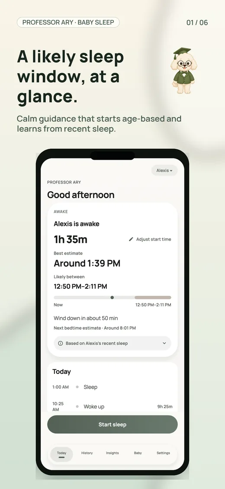
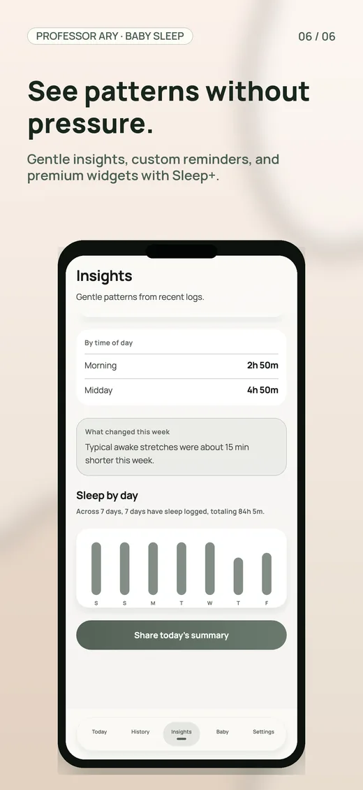
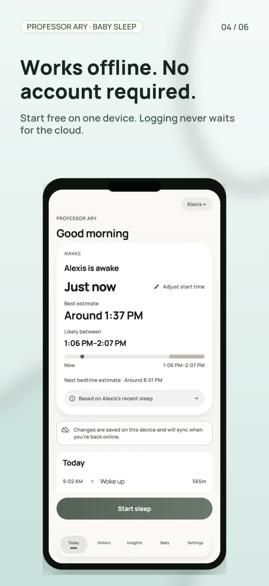
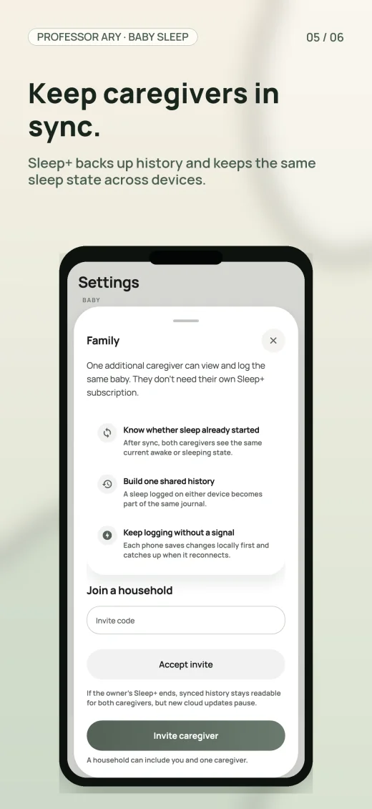

One-tap tracking
Start, stop, or add sleep later.
Baby sleep, made calmer
Track sleep in seconds and get a practical next-sleep window that explains what it used—without an account.

Start, stop, or add sleep later.
See why the window moved.
Core tracking stays on device.

Guidance you can understand
Professor Ary combines age-based guidance with your baby’s recent sleep. As you log, it adapts—and shows the ingredients behind the estimate.
You know your baby best. Guidance supports—not replaces—your judgement.
Useful before sign-up
Free tracking and the best local estimate work without creating an account. Your core sleep data is stored on your device and keeps working offline.
Track the first sleep immediately.
Night feeds do not need a signal.
Sleep+ adds backup and family sync.
No third-party advertising SDKs.

Sleep+ when your family needs more
Keep the free local experience, then add backup, caregiver sync, longer history, widgets, and deeper insights with Sleep+.

Protect the family sleep history.
See the same timeline across devices.
Review patterns beyond the last three days.
Keep the next window close at hand.
Sleep+ is optional. Free tracking, offline use, and local prediction quality stay free.
FAQ
No. Free tracking, offline use, and the local sleep estimate work without an account. An account is only needed for optional Sleep+ cloud and family features.
No. It is an estimate based on age guidance and the sleep you log. Use your judgement and contact a qualified health professional about health or safety concerns.
One baby, unlimited start and stop, the best local estimate, today’s timeline, three visible days of history, one reminder, a basic widget, and offline use.
Yes. Sleep+ can connect the owner and one caregiver so both can share the same baby timeline across devices.
Yes. Add sleep later, edit start and end times, or adjust the current wake anchor. The app recalculates from the corrected timeline.
A calmer next step
Start free, without an account. Add Sleep+ only when backup, family sync, and deeper history earn their place.